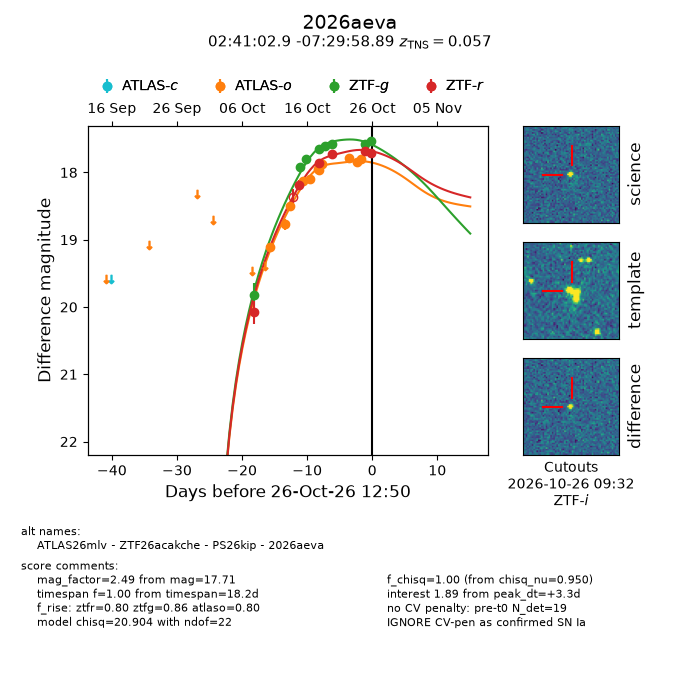
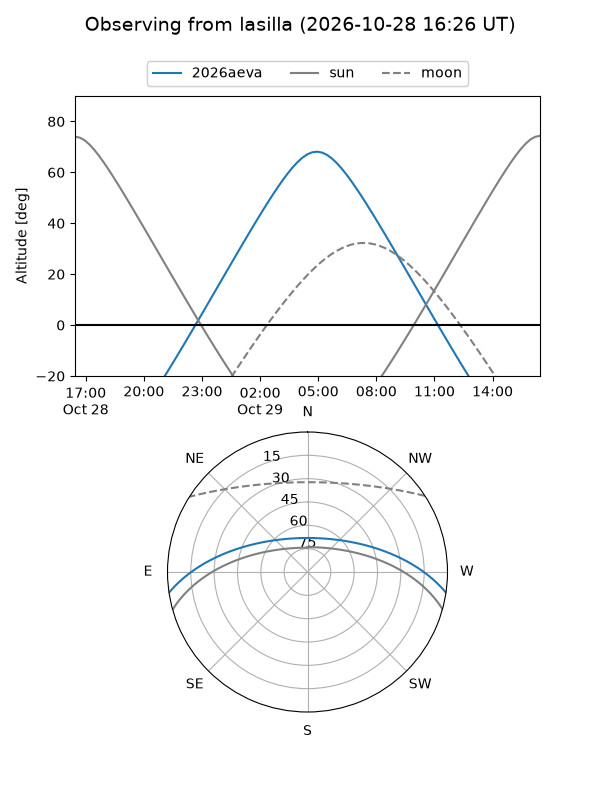
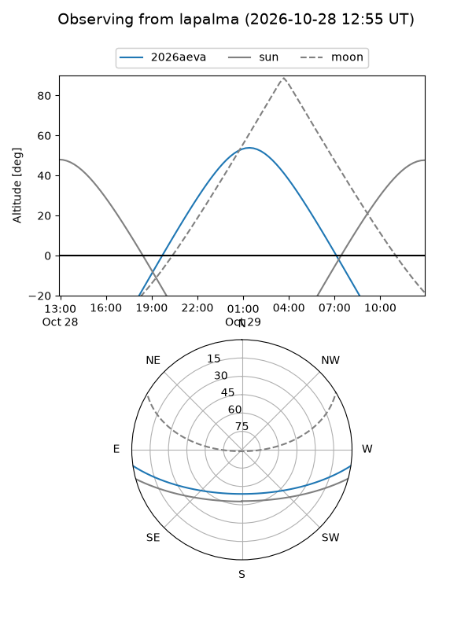
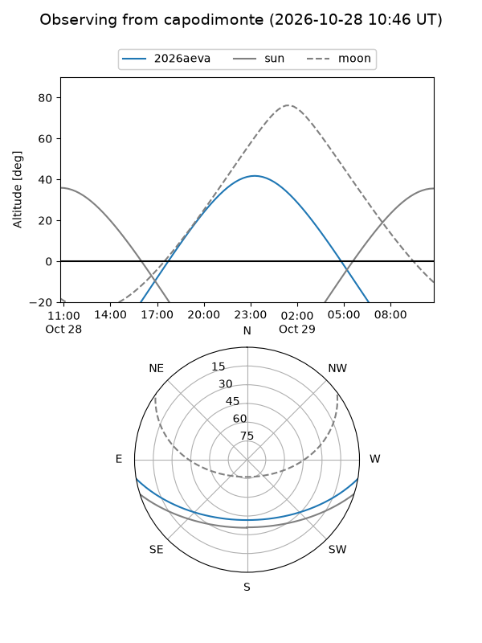
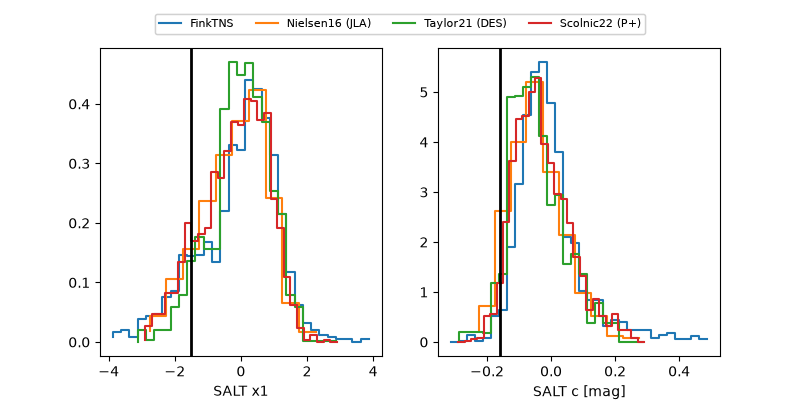

2026aeva
Target 2026aeva at 2026-10-26 12:51
Aliases and brokers:
FINK-ZTF: ztf.fink-portal.org/ZTF26acakche
Lasair-ZTF: lasair-ztf.lsst.ac.uk/objects/ZTF26acakche
ALeRCE-ZTF: alerce.online/object/ZTF26acakche
YSE-PZ: ziggy.ucolick.org/yse/transient_detail/2026aeva
TNS name: wis-tns.org/object/2026aeva
Direct TNS query: direct search
alt names
ZTF26acakche (ztf,fink_ztf)
2026aeva (tns,yse)
ATLAS26mlv (atlas)
PS26kip (panstarrs)
Coordinates:
equatorial (ra, dec) = 40.2620,-7.49969
equatorial (HMS+DMS) = 02:41:02.87,-07:29:58.89
galactic (l, b) = (180.9259,-57.44590)
Flags:
TNS type: SN Ia
TNS redshift: 0.0570
peak dt: +3.3
Photometry:
last atlaso=17.80, ztfg=17.54, ztfr=17.71
11 atlaso, 8 ztfg, 6 ztfr detections
Lightcurve

Visibility



Additional plots
